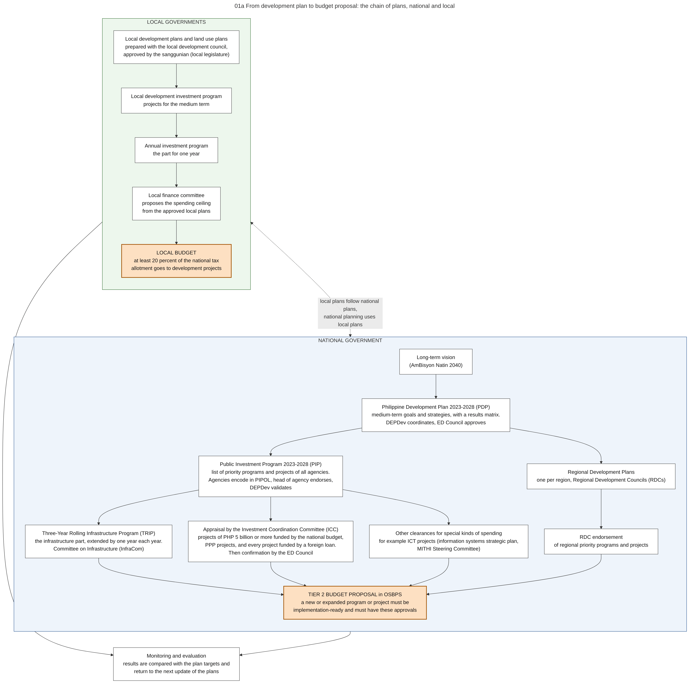

Diagram 01a · Mermaid flowchart
From development plan to budget proposal: the chain of plans, national and local
Question: Which plans must a program or project appear in before it can enter the budget, and who approves each plan?

What the diagram shows
- Question: which plans must a program or project appear in before it can enter the budget, and who approves each plan?
- How to read it: left column = national government. Right column = local governments. Each arrow means "is the basis of". The orange node is the point where a plan becomes a request for money.
- Sources: PIP, TRIP, PIPOL, endorsement by the head of agency [PIP-MEMO]. PIP, TRIP, InfraCom, RDC endorsement, ICT plans and Tier 2 conditions in the Budget Call [NBM156]. ICC threshold of PHP 5 billion, PPP and foreign-loan projects [ICC-NEWS]. ED Council as successor of the NEDA Board, and its committees [AO37]. Local rules: budgets operationalize approved local development plans, local plans harmonized with national plans, national planning based on local planning, 20 percent for development projects [LGC s.305, s.287].
- General knowledge, not opened in a source here: the long-term vision, the names of regional plans and regional investment programs, the names of the local plans (land use plan, comprehensive development plan, local investment program, annual investment program), the results matrix, monitoring reports.
Code

---
title: "01a From development plan to budget proposal: the chain of plans, national and local"
config:
flowchart:
wrappingWidth: 460
---
flowchart TB
%% QUESTION THIS DIAGRAM ANSWERS: which plans must a program or project appear in before it can enter the budget, and who approves each plan?
%% READING: left column = national government. Right column = local governments. Each arrow means "is the basis of". The orange node is the point where a plan becomes a request for money.
%% SOURCES: PIP, TRIP, PIPOL, endorsement by the head of agency [PIP-MEMO]. PIP, TRIP, InfraCom, RDC endorsement, ICT plans and Tier 2 conditions in the Budget Call [NBM156]. ICC threshold of PHP 5 billion, PPP and foreign-loan projects [ICC-NEWS]. ED Council as successor of the NEDA Board, and its committees [AO37]. Local rules: budgets operationalize approved local development plans, local plans harmonized with national plans, national planning based on local planning, 20 percent for development projects [LGC s.305, s.287].
%% GENERAL KNOWLEDGE, NOT OPENED IN A SOURCE HERE: the long-term vision, the names of regional plans and regional investment programs, the names of the local plans (land use plan, comprehensive development plan, local investment program, annual investment program), the results matrix, monitoring reports.
subgraph NAT["NATIONAL GOVERNMENT"]
direction TB
V["Long-term vision<br/>(AmBisyon Natin 2040)"]
PDP["Philippine Development Plan 2023-2028 (PDP)<br/>medium-term goals and strategies, with a results matrix.<br/>DEPDev coordinates, ED Council approves"]
RDP["Regional Development Plans<br/>one per region, Regional Development Councils (RDCs)"]
PIP["Public Investment Program 2023-2028 (PIP)<br/>list of priority programs and projects of all agencies.<br/>Agencies encode in PIPOL, head of agency endorses,<br/>DEPDev validates"]
TRIP["Three-Year Rolling Infrastructure Program (TRIP)<br/>the infrastructure part, extended by one year each year.<br/>Committee on Infrastructure (InfraCom)"]
ICC["Appraisal by the Investment Coordination Committee (ICC)<br/>projects of PHP 5 billion or more funded by the national budget,<br/>PPP projects, and every project funded by a foreign loan.<br/>Then confirmation by the ED Council"]
SECT["Other clearances for special kinds of spending<br/>for example ICT projects (information systems strategic plan,<br/>MITHI Steering Committee)"]
RDCE["RDC endorsement<br/>of regional priority programs and projects"]
T2["TIER 2 BUDGET PROPOSAL in OSBPS<br/>a new or expanded program or project must be<br/>implementation-ready and must have these approvals"]:::hot
V --> PDP
PDP --> RDP
PDP --> PIP
PIP --> TRIP
PIP --> ICC
PIP --> SECT
RDP --> RDCE
TRIP --> T2
ICC --> T2
SECT --> T2
RDCE --> T2
end
subgraph LOC["LOCAL GOVERNMENTS"]
direction TB
LP["Local development plans and land use plans<br/>prepared with the local development council,<br/>approved by the sanggunian (local legislature)"]
LDIP["Local development investment program<br/>projects for the medium term"]
AIP["Annual investment program<br/>the part for one year"]
LFC["Local finance committee<br/>proposes the spending ceiling<br/>from the approved local plans"]
LB["LOCAL BUDGET<br/>at least 20 percent of the national tax<br/>allotment goes to development projects"]:::hot
LP --> LDIP --> AIP --> LFC --> LB
end
M["Monitoring and evaluation<br/>results are compared with the plan targets and<br/>return to the next update of the plans"]
T2 --> M
LB --> M
LP <-. "local plans follow national plans,<br/>national planning uses local plans" .-> RDP
classDef default fill:#ffffff,stroke:#444444,color:#111
classDef hot fill:#fde0c2,stroke:#a35200,color:#111,stroke-width:2px
style NAT fill:#eef4fb,stroke:#1f4e8c
style LOC fill:#edf7ed,stroke:#2e6b2e